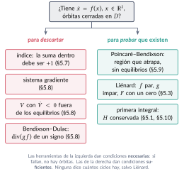
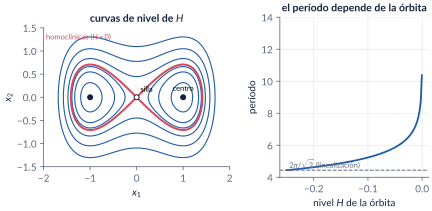
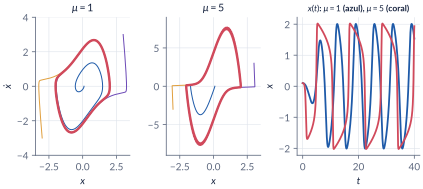
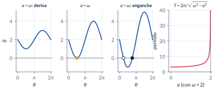
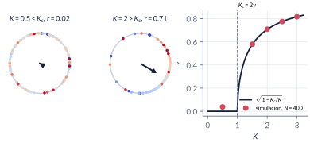
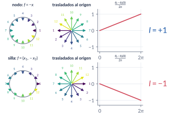
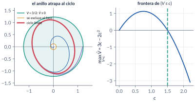
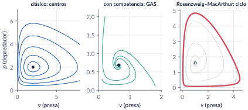
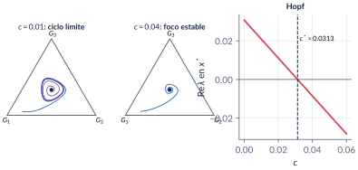

5. Órbitas, osciladores y ciclos límite
Semanas 5–7 · cinco clases
Un sistema no lineal puede hacer algo que ningún sistema lineal hace: oscilar de manera robusta, con una amplitud y un período que no dependen de dónde empezó. Esta parte estudia esas oscilaciones —ciclos límite, osciladores de fase, sincronización— y las dos preguntas que hay que saber responder sobre ellas: cómo descartar que existan (índice, sistemas gradiente, Lyapunov, Bendixson–Dulac) y cómo probar que existen (Poincaré–Bendixson, Liénard). Terminamos con poblaciones de presas y depredadores y con un modelo de cambio de lenguaje.
Al terminar esta parte usted podrá
- Distinguir una órbita cerrada de un ciclo límite y explicar por qué un sistema lineal no puede tener ciclos límite.
- Analizar flujos en el círculo y osciladores de fase: período, arrastre y deriva, y el umbral de sincronización del modelo de Kuramoto.
- Calcular el índice de una curva cerrada y usarlo, junto con los sistemas gradiente, las funciones de Lyapunov y el criterio de Bendixson–Dulac, para descartar órbitas cerradas.
- Construir una región que atrape trayectorias y usar el teorema de Poincaré–Bendixson para probar que existe una órbita periódica.
- Aplicar el mismo arsenal a modelos de poblaciones (Lotka–Volterra y sus variantes) y a un modelo de cambio de lenguaje.
Ruta de las clases
| Clase | Qué se ve | Capítulo | Scripts |
|---|---|---|---|
| 1 | Más allá de los equilibrios. Órbitas cerradas (Duffing), ciclos límite, van der Pol y Liénard | §5.1–5.3 | C5_Ej1, C5_Ej2, C5_Ej3, crearModelo_VanDerPol |
| 2 | Flujos en el círculo, oscilador no uniforme, osciladores acoplados, luciérnagas, Kuramoto | §5.4–5.6 | C5_Ej4, C5_Ej5, C5_Ej6 |
| 3 | Teoría del índice; descartar órbitas: gradiente, Lyapunov, Bendixson–Dulac | §5.7–5.8 | C5_Ej7, C5_Ej8 |
| 4 | Conjuntos \(\omega\)-límite y Poincaré–Bendixson | §5.9 | C5_Ej9 |
| 5 | Presas y depredadores (Lotka–Volterra, competencia, Rosenzweig–MacArthur) y cambio de lenguaje (Nowak) | §5.10–5.11 | C5_Ej10, C5_Ej11 |
Lo esencial, en una página

Órbita cerrada y ciclo límite
Una solución no constante con \(x(t+T)=x(t)\) es periódica; su imagen en el plano de fase es una órbita cerrada. Un ciclo límite es una órbita cerrada aislada: alguna vecindad suya no contiene otras órbitas cerradas. En un sistema lineal las órbitas cerradas vienen en familias (si \(x(t)\) lo es, también \(c\,x(t)\)), así que un sistema lineal no tiene ciclos límite.

Trampa: \(\pm j\omega\) en la linealización no es un centro
\(\dot x_1=-x_2+x_1(x_1^2+x_2^2)\), \(\dot x_2=x_1+x_2(x_1^2+x_2^2)\) tiene la linealización de un centro (\(\pm j\)), pero en polares \(\dot r=r^3\): el origen es un foco inestable y las soluciones escapan en \(t=1/(2r_0^2)\). Con valores propios imaginarios puros la linealización no concluye nada.

Osciladores de fase
En el círculo, \(\dot\theta=\omega-a\sin\theta\). Si \(a>\abs\omega\) hay dos equilibrios y la fase se engancha; si \(a<\abs\omega\) la fase deriva con período \(T=2\pi/\sqrt{\omega^2-a^2}\), que crece sin límite cuando \(a\to\abs\omega\). La misma ecuación describe la diferencia de fase de dos osciladores acoplados y la de una luciérnaga frente a una linterna.

Kuramoto
\(\dot\theta_i=\omega_i+\frac KN\sum_j\sin(\theta_j-\theta_i)=\omega_i+Kr\sin(\Psi-\theta_i)\), con \(re^{j\Psi}=\frac1N\sum_je^{j\theta_j}\). Con frecuencias de Lorentz de ancho \(\gamma\), la sincronización parcial aparece en \(K_c=2\gamma\), y \(r=\sqrt{1-K_c/K}\) para \(K>K_c\). Acoplar no es igualar: los osciladores de los extremos siguen derivando.

Lo que encierra una órbita cerrada
El índice de una curva cerrada es el número de vueltas que da el campo vectorial al recorrerla. Nodos, focos y centros tienen índice \(+1\); las sillas, \(-1\). Toda órbita cerrada tiene índice \(+1\), así que encierra equilibrios cuyos índices suman \(+1\). Se usa para descartar: una curva que no encierra equilibrios, o que solo encierra sillas, no puede ser una órbita.

Bendixson–Dulac
Si en una región simplemente conexa \(D\subset\R^2\) existe \(g\in\Cont1\) tal que \(\nabla\cdot(gf)\) no es idénticamente cero y no cambia de signo, entonces \(D\) no contiene órbitas cerradas (con \(g\equiv1\) es el criterio de Bendixson). Solo descarta: que la divergencia cambie de signo no prueba nada.
Poincaré–Bendixson (Khalil, Lema 2.1)
Sea \(M\subset\R^2\) compacto y positivamente invariante. Si \(M\) no contiene equilibrios, o contiene solo uno con valores propios de parte real positiva (foco o nodo inestable), entonces \(M\) contiene una órbita periódica. No dice que sea aislada ni que sea única, y no vale en \(\R^3\).

Trampa: Poincaré–Bendixson no da un ciclo límite
El anillo \(\{c_1\le x_1^2+x_2^2\le c_2\}\) es compacto, invariante y sin equilibrios para el oscilador armónico, que no tiene ningún ciclo límite: el anillo está lleno de órbitas cerradas. El teorema da una órbita periódica; para concluir que es aislada y única hace falta más (Liénard, o encoger la región).

Trampa: más recursos no estabilizan
En Rosenzweig–MacArthur, si la capacidad de carga \(K\) supera \(K_H=3\), el equilibrio pierde la estabilidad y aparece un ciclo cuya amplitud crece con \(K\); con \(K=5\) las presas bajan hasta \(0.047\). Es la paradoja del enriquecimiento.
Aplicación: ciclos límite y lenguaje (Mitchener y Nowak, 2004)
Tres gramáticas compiten en el símplex \(\simplex\) con dinámica de replicador–mutador; \(c\) es la probabilidad de aprender la gramática anterior en el ciclo \(G_1\to G_2\to G_3\to G_1\). Para \(c<c^*=23/735\approx0.0313\) el equilibrio \((\tfrac13,\tfrac13,\tfrac13)\) es un foco inestable, la frontera repele y Poincaré–Bendixson demuestra que hay una órbita periódica: la población oscila entre gramáticas (con \(c=0.01\), período \(\approx63\)). Sin mutación no hay ciclos: la aptitud media crece (Fisher) y hace de función de Lyapunov.

Explorador interactivo
Cuatro pestañas con los modelos del capítulo. Los cálculos se hacen en su navegador con Runge–Kutta de paso fijo (los mismos modelos de C5_Ej3, C5_Ej4, C5_Ej6, C5_Ej7, C5_Ej9 y C5_Ej10).
Retos con el explorador
- Oscilador de fase: con \(\omega=2\), baje \(a\) desde \(3\). ¿En qué valor exacto empieza la deriva? ¿Qué le pasa al período cuando \(a=1.99\)?
- Plano de fase: en van der Pol, pase \(\mu\) de positivo a negativo. ¿Desaparece el ciclo o cambia otra cosa?
- Plano de fase: en el ejemplo de Khalil, mueva \(c\) de \(0.5\) a \(3\). ¿Desde qué valor el disco \(\{V\le c\}\) atrapa las trayectorias?
- Plano de fase: en Rosenzweig–MacArthur, suba \(K\) de \(2\) a \(6\) y mire qué tan cerca de cero llegan las presas.
- Kuramoto: con \(\gamma=0.5\), ponga \(K\) justo por debajo y justo por encima de \(1\). Luego baje \(N\) a 20: ¿qué tan fiable es la teoría con pocos osciladores?
- Índice: con el campo “silla + foco”, ¿qué curvas tienen índice \(+1\)? ¿Alguna de ellas puede ser una órbita cerrada?
Códigos de esta parte
Los bloques salen directamente de los archivos del repositorio. Ejecute antes iniciarCurso. verificarCap05 comprueba los números del capítulo (34/34).
Duffing: la energía se conserva (§5.2).
H = @(x) x(:,2).^2/2 - x(:,1).^2/2 + x(:,1).^4/4;
opc = odeset('RelTol', 1e-11, 'AbsTol', 1e-12);
[t, X] = ode45(f, [0 50], [1.3; 0], opc);
fprintf('H(x(t)): de %.10f a %.10f (variación %.1e)\n', H(X(1,:)), H(X(end,:)), max(H(X)) - min(H(X)));El falso centro (§5.2).
g = @(t, x) [-x(2) + x(1)*(x(1)^2 + x(2)^2); x(1) + x(2)*(x(1)^2 + x(2)^2)];
[t2, X2] = ode45(g, [0 1.99], [0.5; 0], opc);
fprintf('contraejemplo: r(1.99) = %.3f (exacto %.3f); escapa en t = 1/(2 r0^2) = 2\n', ...
norm(X2(end,:)), 0.5/sqrt(1 - 2*0.25*1.99));van der Pol: período y amplitud del ciclo (§5.3).
opc = odeset('RelTol', 1e-10, 'AbsTol', 1e-12);
for mu = [1 5]
f = @(t, x) [x(2); -x(1) - mu*(x(1)^2 - 1)*x(2)];
[t, X] = ode45(f, [0 200], [0.5; 0], opc);
k = find(t > 100);
sube = k(X(k(1:end-1), 2) < 0 & X(k(2:end), 2) >= 0 & X(k(1:end-1), 1) < 0); % mínimos de x1
T = mean(diff(t(sube)));
fprintf('mu = %g: período %.4f, amplitud %.4f\n', mu, T, max(X(k, 1)));
endEl oscilador no uniforme (§5.4).
w = 2; opc = odeset('RelTol', 1e-11, 'AbsTol', 1e-12);
for a = [1 1.9 1.99]
ev = odeset(opc, 'Events', @(t, th) deal(th - 2*pi, 1, 1));
[~, ~, te] = ode45(@(t, th) w - a*sin(th), [0 200], 0, ev);
fprintf('a = %4.2f: período simulado %.4f, fórmula %.4f\n', a, te, 2*pi/sqrt(w^2 - a^2));
endLuciérnagas: arrastre y deriva (§5.5).
w = 1; A = 0.5; opc = odeset('RelTol', 1e-11, 'AbsTol', 1e-12);
fprintf('rango de arrastre: %.2f <= Omega <= %.2f\n', w - A, w + A);
for Om = [1.3 1.6 2]
mu = (Om - w)/A;
if abs(mu) <= 1
[~, P] = ode45(@(t, p) Om - w - A*sin(p), [0 60], 0, opc);
fprintf('Omega = %.1f: arrastre, phi(60) = %.4f, arcsin(mu) = %.4f\n', Om, P(end), asin(mu));
else
ev = odeset(opc, 'Events', @(t, p) deal(p - 2*pi, 1, 1));
[~, ~, te] = ode45(@(t, p) Om - w - A*sin(p), [0 500], 0, ev);
fprintf('Omega = %.1f: deriva, período %.4f, fórmula %.4f\n', Om, te, ...
2*pi/sqrt((Om - w)^2 - A^2));
end
endEl modelo de Kuramoto (§5.6).
function dth = modeloKuramoto(~, th, w, K)
% MODELOKURAMOTO Osciladores de Kuramoto con acoplamiento global.
% dth_i = w_i + (K/N) sum_j sin(th_j - th_i) = w_i + K r sin(Psi - th_i),
% con r e^{j Psi} = (1/N) sum_j e^{j th_j} (parámetro de orden).
% La segunda forma cuesta O(N) en lugar de O(N^2).
z = mean(exp(1j*th));
dth = w(:) + K*abs(z)*sin(angle(z) - th(:));
endN = 400; gam = 0.5; i = (1:N).';
w = gam*tan(pi*(i - 0.5)/N - pi/2); % cuantiles de Lorentz
th0 = 2*pi*mod((1:N).'*0.6180339887, 1); % fases iniciales repartidas (reproducible)
Ks = [0.5 1.5 2 3]; rK = zeros(size(Ks));
opc = odeset('RelTol', 1e-6, 'AbsTol', 1e-8);
for k = 1:numel(Ks)
[~, TH] = ode45(@(t, th) modeloKuramoto(t, th, w, Ks(k)), [0 100], th0, opc); % transitorio
[~, TH] = ode45(@(t, th) modeloKuramoto(t, th, w, Ks(k)), linspace(100, 200, 201), TH(end,:).', opc);
rK(k) = mean(abs(mean(exp(1j*TH), 2)));
fprintf('K = %.1f: r = %.3f (teoría %.4f)\n', Ks(k), rK(k), sqrt(max(0, 1 - 2*gam/Ks(k))));
endEl índice como número de vueltas (§5.7).
function I = indiceCurva(f, c, r, n)
% INDICECURVA Índice de una circunferencia respecto al campo f (Poincaré).
% I = indiceCurva(f, c, r) recorre la circunferencia de centro c y radio r
% en sentido antihorario, sigue el ángulo de f(x) sin saltos (unwrap) y
% devuelve el número neto de vueltas que dio el vector. f: R^2 -> R^2.
% La curva no debe pasar por equilibrios (f ~= 0 sobre ella).
if nargin < 4, n = 4000; end
th = linspace(0, 2*pi, n + 1);
ang = zeros(1, n + 1);
for k = 1:n + 1
v = f(c(:) + r*[cos(th(k)); sin(th(k))]);
ang(k) = atan2(v(2), v(1));
end
I = (sum(diff(unwrap(ang))))/(2*pi); % cambio neto del ángulo / 2 pi
endf = @(x) [-x(1) + x(1)*x(2); x(1) + x(2) - 2*x(1)*x(2)];
J = @(x) [-1 + x(2), x(1); 1 - 2*x(2), 1 - 2*x(1)];
for xe = [0 0; 1 1].'
fprintf('equilibrio (%g,%g): valores propios %s, sign(det J) = %+d\n', xe, ...
mat2str(eig(J(xe)).', 3), sign(det(J(xe))));
end
fprintf('círculo que rodea ambos: %+.4f; solo el foco: %+.4f\n', ...
indiceCurva(f, [0.5 0.5], 2), indiceCurva(f, [1 1], 0.3));Bendixson–Dulac (§5.8).
delta = 0.2; h = 1e-6;
% f = (x2, x1 - x1^3 - delta x2): div f = d f1/d x1 + d f2/d x2 = 0 + (-delta)
f2 = @(x) x(1) - x(1)^3 - delta*x(2);
divDuffing = @(x) 0 + (f2(x + [0 h]) - f2(x - [0 h]))/(2*h);
fprintf('(3) div Duffing en (0.7, -1.2) = %.6f (= -delta)\n', divDuffing([0.7 -1.2]));
a = 1; b = 1; c = 0.5; d = 1; e = 0.5; ff = 0.2; v = 0.8; p = 1.3;
g1 = @(v, p) (a - e*v - b*p)/p; g2 = @(v, p) (-c + d*v - ff*p)/v; % f/(v p)
divD = (g1(v + h, p) - g1(v - h, p))/(2*h) + (g2(v, p + h) - g2(v, p - h))/(2*h);
fprintf(' div(f/(v p)) en (0.8, 1.3) = %.6f; -e/p - f/v = %.6f\n', divD, -e/p - ff/v);La región que atrapa (§5.9).
f = @(t, x) [x(1) + x(2) - x(1)*(x(1)^2 + x(2)^2); -2*x(1) + x(2) - x(2)*(x(1)^2 + x(2)^2)];
fprintf('valores propios en el origen: %s\n', mat2str(eig([1 1; -2 1]).', 4));
th = linspace(0, 2*pi, 20001);
for c = [1 1.5 2]
x1 = sqrt(c)*cos(th); x2 = sqrt(c)*sin(th);
Vd = 2*c - 2*x1.*x2 - 2*c^2; % V' = 2 r^2 - 2 x1 x2 - 2 r^4 en r^2 = c
fprintf('c = %.1f: max de V'' en la frontera = %+.4f (3c - 2c^2 = %+.4f)\n', c, max(Vd), 3*c - 2*c^2);
endEl ciclo dentro del anillo (§5.9).
opc = odeset('RelTol', 1e-10, 'AbsTol', 1e-12);
for x0 = [0.01 0; 1.2 0].'
[t, X] = ode45(f, [0 60], x0, opc);
k = t > 40; r = vecnorm(X(k,:).');
fprintf('desde (%.2f, %.2f): en régimen r entre %.4f y %.4f\n', x0, min(r), max(r));
end
tk = t(k); x1k = X(k,1);
cruza = tk([false; x1k(1:end-1) < 0 & x1k(2:end) >= 0]);
fprintf('período del ciclo = %.4f\n', mean(diff(cruza)));Rosenzweig–MacArthur y la paradoja del enriquecimiento (§5.10).
beta = 2; gam = 1; vs = gam/(beta - gam);
fprintf('(3) v* = %g, K_H = %g\n', vs, (beta + gam)/(beta - gam));
for K = [2.5 5]
rm = @(t, x) [x(1)*(1 - x(1)/K) - x(1)*x(2)/(1 + x(1)); x(2)*(beta*x(1)/(1 + x(1)) - gam)];
ps = (1 - vs/K)*(1 + vs);
[t, X] = ode45(rm, [0 800], [1.1*vs; ps], odeset(opc, 'MaxStep', 0.5));
v = X(t > 600, 1);
fprintf(' K = %.1f: equilibrio (%g, %.4f); en régimen v entre %.4f y %.4f\n', K, vs, ps, min(v), max(v));
endEl modelo de Nowak (§5.11).
function dx = modeloNowak(~, x, B, Q)
% MODELONOWAK Dinámica replicador-mutador del lenguaje (Mitchener y Nowak, 2004).
% F = B x (aptitud de cada gramática), Fbar = x' B x (aptitud media),
% dx_j = sum_i F_i x_i Q_ij - Fbar x_j, es decir dx = Q' (F .* x) - Fbar x.
% Q es estocástica por filas: Q(i,j) = prob. de que el hijo de un hablante
% de G_i aprenda G_j.
F = B*x(:);
Fbar = x(:).'*F;
dx = Q.'*(F.*x(:)) - Fbar*x(:);
endxs = ones(3,1)/3; P = [1 0; 0 1; -1 -1]; % coordenadas (x1, x2) en el símplex
Js = @(c) jacobianoNumerico(@(y) [1 0 0; 0 1 0]*modeloNowak(0, xs + P*y, B, Qc(c)), [0; 0]);
for c = [0.01 0.04]
fprintf('(2) c = %.2f: valores propios en el símplex %s\n', c, mat2str(eig(Js(c)).', 4));
end
cs = fzero(@(c) max(real(eig(Js(c)))), [0.01 0.04]);
fprintf('(3) Hopf en c* = %.6f, período %.2f\n', cs, 2*pi/max(abs(imag(eig(Js(cs))))));El modelo se construye por código: ejecute el script y se crea, se simula y se compara con ode45.
VanDerPol.slx: el oscilador con integradores y ganancia \(\mu\) ajustable.
%% crearModelo_VanDerPol -- Construye VanDerPol.slx por código (Simulink)
% QUÉ HACE Arma con bloques el oscilador x'' + mu (x^2 - 1) x' + x = 0:
% dos integradores en cascada (x' y x), un producto para x^2 x' y
% sumadores. Simula 40 s desde (0.5, 0) con mu = 1, compara contra
% ode45 y dibuja el plano de fase.
% OBSERVE El diagrama es la ecuación leída de derecha a izquierda: x'' es la
% suma de -x (resorte) y -mu (x^2 - 1) x' (amortiguamiento que cambia
% de signo). Cambie mu en el workspace y vuelva a simular.
% ESPERADO max |x_Simulink - x_ode45| < 1e-5 (si falla, el mensaje dice qué bloque).
% REQUIERE Simulink.
clear; close all; clc;
nombre = 'VanDerPol'; mu = 1; x0 = [0.5; 0];
if bdIsLoaded(nombre), close_system(nombre, 0); end
new_system(nombre); open_system(nombre);
set_param(nombre, 'StopTime', '40', 'Solver', 'ode45', 'RelTol', '1e-9', 'AbsTol', '1e-10', ...
'SaveOutput', 'on', 'SaveFormat', 'Array');
b = @(tipo, nom, pos) add_block(['simulink/' tipo], [nombre '/' nom], 'Position', pos);
b('Continuous/Integrator', 'xdot', [300 100 330 130]); set_param([nombre '/xdot'], 'InitialCondition', num2str(x0(2)));
b('Continuous/Integrator', 'x', [420 100 450 130]); set_param([nombre '/x'], 'InitialCondition', num2str(x0(1)));
b('Math Operations/Product', 'x2', [300 180 330 210]); set_param([nombre '/x2'], 'Inputs', '2');
b('Math Operations/Bias', 'menos1', [360 180 390 210]); set_param([nombre '/menos1'], 'Bias', '-1');
b('Math Operations/Product', 'amort', [420 180 450 210]);
b('Math Operations/Gain', 'mu', [480 180 510 210]); set_param([nombre '/mu'], 'Gain', 'mu');
b('Math Operations/Sum', 'suma', [220 100 250 130]); set_param([nombre '/suma'], 'Inputs', '--');
b('Sinks/Out1', 'y', [520 100 550 130]);
b('Sinks/Out1', 'yd', [520 40 550 70]);
l = @(a, c) add_line(nombre, a, c, 'autorouting', 'on');
l('suma/1', 'xdot/1'); l('xdot/1', 'x/1'); l('x/1', 'y/1'); l('xdot/1', 'yd/1');
l('x/1', 'x2/1'); l('x/1', 'x2/2'); l('x2/1', 'menos1/1');
l('menos1/1', 'amort/1'); l('xdot/1', 'amort/2'); l('amort/1', 'mu/1');
l('mu/1', 'suma/2'); l('x/1', 'suma/1');
save_system(nombre);
assignin('base', 'mu', mu);
out = sim(nombre, 'ReturnWorkspaceOutputs', 'on');
tS = out.tout; YS = out.yout; % columnas: x, x'
[~, XO] = ode45(@(t, x) [x(2); -x(1) - mu*(x(1)^2 - 1)*x(2)], tS, x0, odeset('RelTol', 1e-10, 'AbsTol', 1e-12));
err = max(abs(YS(:,1) - XO(:,1)));
if err < 1e-5
fprintf('VanDerPol.slx coincide con ode45: max |error| = %.1e\n', err);
else
warning('Diferencia %.2e: revise los bloques "suma" (signos --) y "menos1" (Bias -1).', err);
end
figure; plot(YS(:,1), YS(:,2)); grid on; xlabel('x'); ylabel('dx/dt'); title('VanDerPol.slx');Videos
Los videos se generan con los scripts de la tabla (MATLAB, VideoWriter).
| Video | Qué muestra | Script |
|---|---|---|
| V5.1 · Kuramoto | Los osciladores en el círculo y \(r(t)\) mientras \(K\) cruza \(K_c\). | C5_Video_Kuramoto.m |
| V5.2 · Índice | La curva barre el plano y el contador de vueltas cambia al cruzar equilibrios. | C5_Video_Indice.m |
| V5.3 · van der Pol | Trayectorias de adentro y de afuera llegan al mismo ciclo. | C5_Video_VanDerPol.m |
Problemas
Los problemas del capítulo (§5.13) tienen cada uno una trampa; las soluciones seleccionadas están en §5.14 y las respuestas a las pausas al final del capítulo.